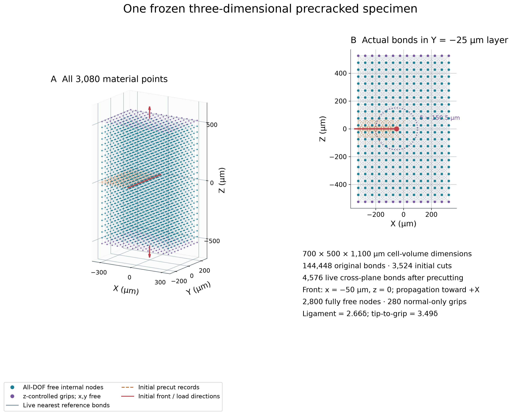
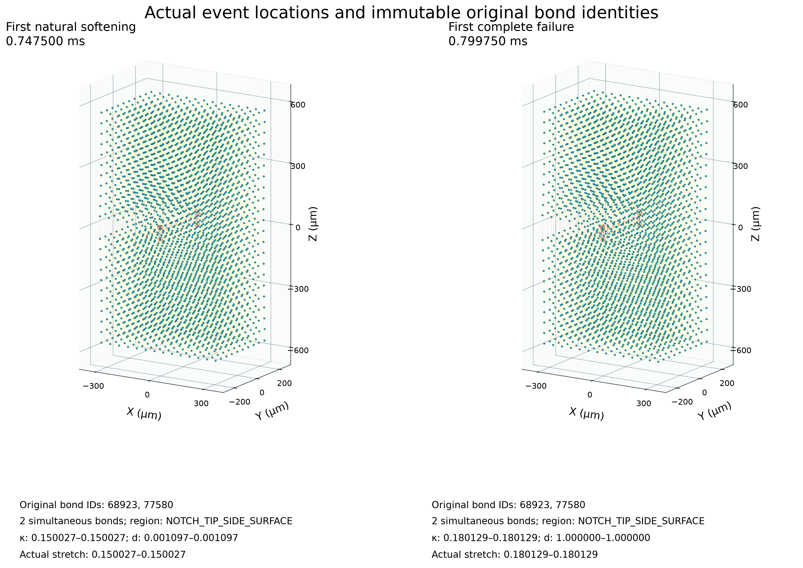
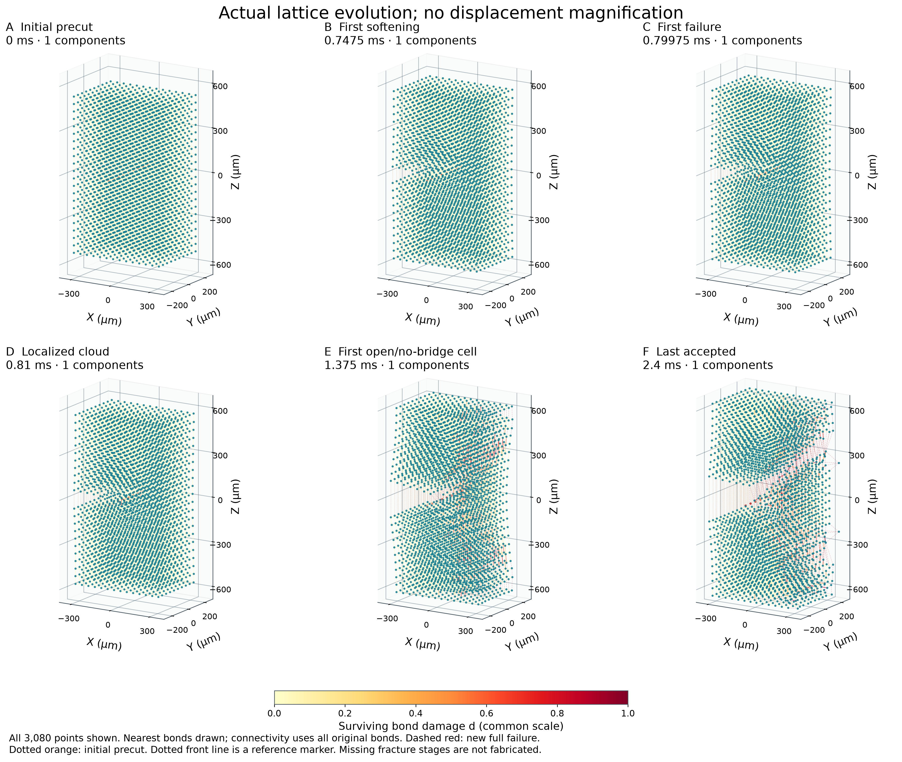
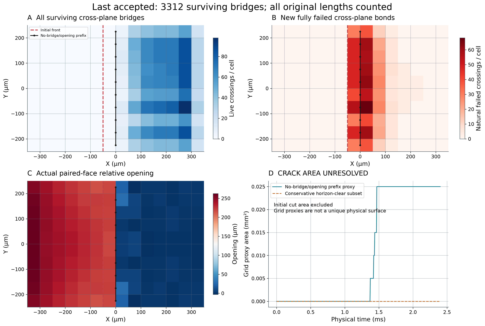
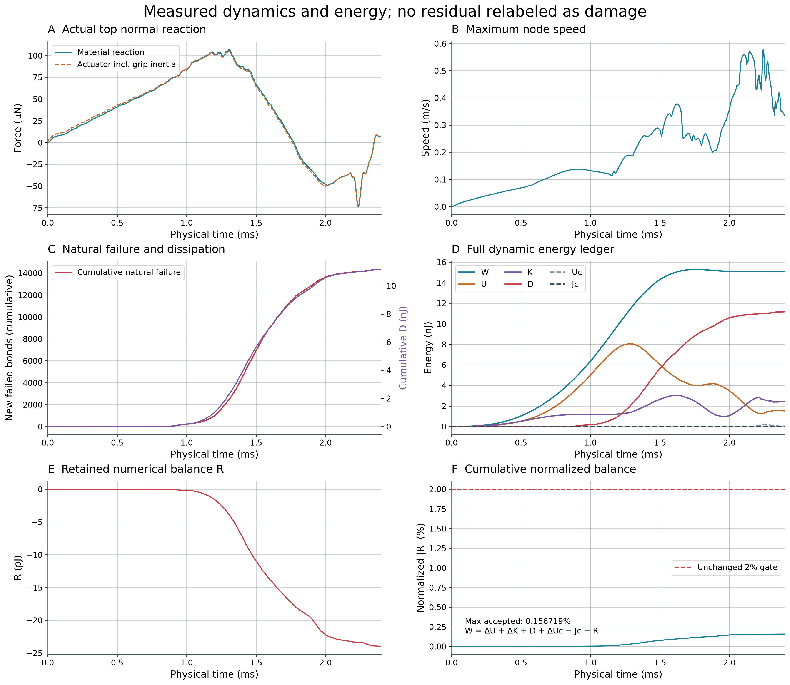
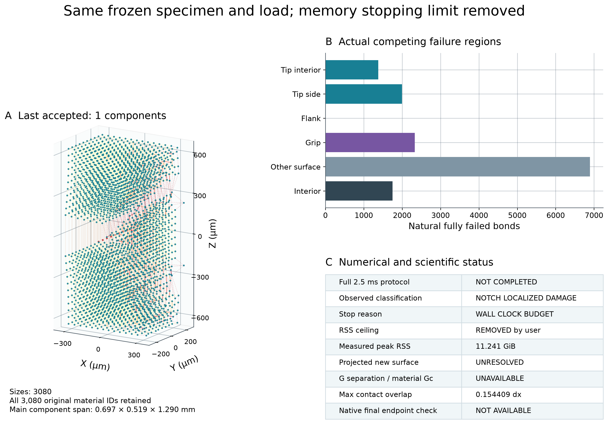

Run 20261014T214309Z · STOPPED_WALL_CLOCK_BUDGET · NOTCH_LOCALIZED_DAMAGE
实际到 2.4 ms；14342 个新增完全失效键；3312 条跨面桥接存活。新裂面和协议分离耗能仍须独立验收，当前Gc不可用。

几何、原始键与初始缺口完全不变，复用上一归档的结构图；全部3080点，三维图只绘最近邻参考键，右侧层内绘全部参考键。橙色为初始预切记录，不是新自然断裂。
SVG · PNG
首次自然软化与完全失效的实际原生状态、原始bond ID、参考区域和κ/d。全部初始3524预切被排除；图中事件位置不移动，若未发生则明确标记。所有同时发生事件的完整ID与伸长在FIRST_SOFTENING_AND_FAILURE.json。
SVG · PNG
从实际完整态选取初态、真实首次事件、已保存时刻及末接受态，全部采用相同物理范围、相机和d色标；位移不放大。图中只绘最近邻，分量用全部原始存活图重建。未发生的集中或传播阶段不补画；分量颜色按当前大小排序，不能据此跨帧追踪同一碎块身份。
SVG · PNG
全部跨面原始线段按真实交点统计，初始预切与自然完全失效分开；所有长程桥接纳入。原冻结floor网格边界归属保留，计数纹理不等于不对称损伤。真实开口减去初始点距；新单元代理要求无桥接、开口和从缺口连续，保守子集再检查horizon邻域。代理面积尚非唯一物理裂面，不计算任意D/截面Gc。
SVG · PNG
全程采用真实物理ms；材料反力与含夹持惯性的执行器反力分开。D来自真实变分更新，R独立保留；初始预切不计D。图只包含已接受态，若发生门槛停止，不将未接受候选绘入合法曲线；动态惯性仍需单独讨论。
SVG · PNG
末接受状态全原始图连通分量、各预注册区域的真实自然失效数及独立准入判断。取消RSS上限不改变能量/损伤/运动学门槛；数值协议通过与自然裂纹面积/耗能认证分开。接触重叠来自实际数据，不因规则未改就宣称物理校准。
SVG · PNG